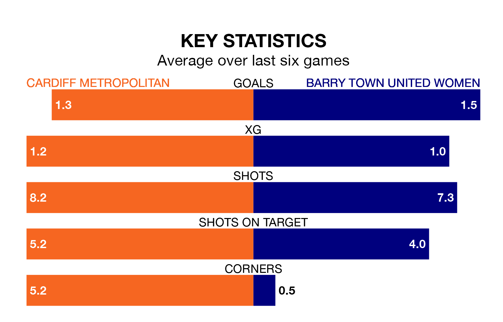

Wednesday's late match at Cyncoed Campus Artificial Pitch sees two relegation candidates play each other, as seventh-ranked Cardiff Metropolitan host fifth-placed Barry Town United Women.
Cardiff Metropolitan have picked up 15 points from their first 15 Welsh Premier Women's League games, with four wins and three draws.
That is four points less than Barry Town United have collected, having won six and drawn one.
In the last 10 years, Cardiff Metropolitan and Barry Town United have played each other on six occasions. Cardiff Metropolitan won four of them and Barry Town United two.
On average, Cardiff Metropolitan scored 4.0 goals and Barry Town United 1.3 in those matches.
Their last meeting was on January 28, when Barry Town United won 1-0 away.
Cardiff Metropolitan are in bad form in the Welsh Premier Women's League, with one win and a draw from their last six games.
With three wins and a draw over that period, Barry Town United's form is much better – they have taken 10 points from 18, compared to the home side's four.
With 22 goals in 17 games so far this season, Cardiff Metropolitan are scoring at below the league average rate with 1.3 goals per game. And they are conceding more than average, letting in 39 goals at a rate of 2.3 per game.
The visitors are also below average scorers, with 1.3 goals per game, compared to a league average of 1.8. They have conceded 2.2 goals per game.
Cardiff Metropolitan's last match was on Sunday, a 3-1 loss against The New Saints Women.
Barry Town United lost 2-1 against Pontypridd Town last time out, also on Sunday.
Updated: 12:16 (UTC), 25/03/24